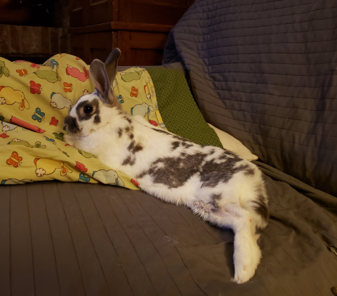

Curly
Breed: Mix
Sex: Female
Age: 6 Years, 2 Months
Weight: 4.7 Pounds
Bio
Curly was found as a stray in Greenwood, very skinny and with eye infection. She was turned into an Indiana
shelter, who helped get her weight back up and treated her eyes. But Curly was kind of stuck at the shelter...
they didn't have a spay/neuter connection, and Curly was getting cranky about being there. IHRS came in to take
Curly to rescue after care after she'd been at the shelter a couple of months. One thing we discovered while at
the shelter: Curly had terribly maloccluded incisors!
Curly had to learn to eat different kinds of food
post her dental surgeries. She has trouble with grooming because she does not have teeth to help with that task.
Her foster home helps her with this and Curly is good with cleaning as best she can with her tongue! The extent of
her issues is so severe, her veterinarian feels she should remain in sanctuary status.
Curly is an
incredibly happy bunny, especially because she is bonded to her best friend
Violet, another special needs bunny! Violet and Curly snuggle a lot. We do have to separate them at mealtimes
since Curly is very slow to chew her soft pellets and Violet tries to steal them all, but otherwise they spend all
their time together. We are so happy they have found each other for comfort and friendship even though they both
have serious health needs.
Want to Support Me?
To support me, or any of the sanctuary rabbits at the IHRS, please Donate to our GoFundMe if you are able.